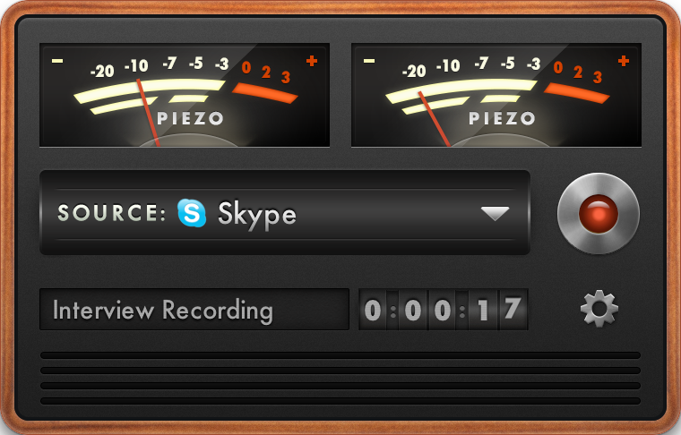
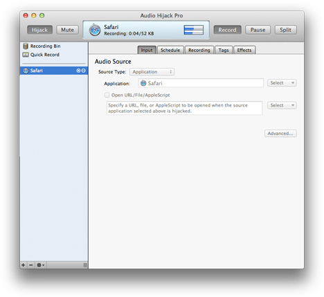

Recording Audio
Fission excels at editing existing audio files, but what about recording new files? Whether you need to record audio from a microphone or from an application, Rogue Amoeba has you covered with two handy recording applications: Piezo and Audio Hijack Pro. All recordings made with Piezo or Audio Hijack Pro can be edited losslessly in Fission.
Simple Recording

Piezo provides simple audio recording.
Designed for simplicity, Piezo makes it a snap to record audio from both applications and audio devices. Select your source, then click the record button, and your audio will be saved. Check it out with the free trial available on our site.
Powerful Recording

Audio Hijack Pro provides more powerful audio recording options.
If you require more powerful recording options, Audio Hijack Pro is the way to go. With Audio Hijack Pro, you can capture from already-running applications, record all System Audio at once, set timed recordings to run when you're not around, record to an enormous variety of recording formats, and more. Download a free trial right from our site.